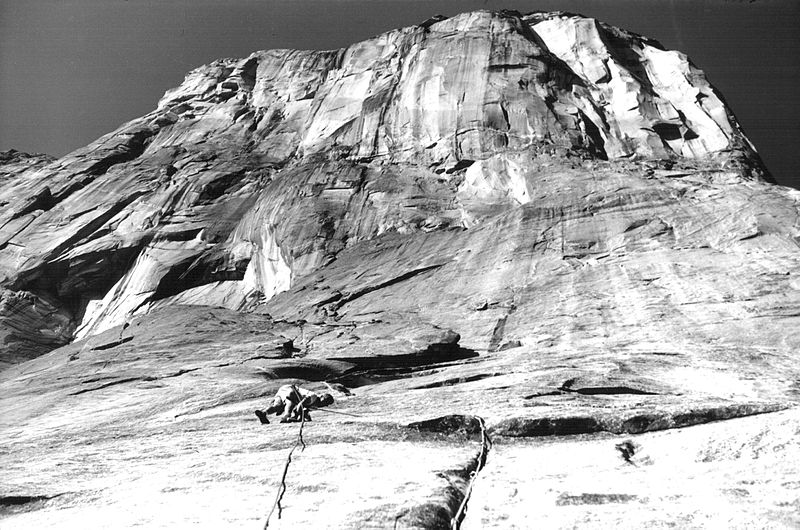

Royal Robbins
A pioneer of American rockclimbing
Royal Robbins(second from left) with his climbing partners in Yosemite.
Royal Robbins: A short biography
Royal Robbins was an American rockclimber/mountaineer who was famed for his early ascents in Yosemite of iconic rock formations like half-dome and El-Capitan. Robbins was at the forefront of the rise in popularity of rockclimbing as a sport. Unlike many of his contemporaries, however, how one climbed was just as important as the significance of what one climbed. During a time when many climbers relied on drilling pitons into a face to aid their way up, Robbins was an advocate of "clean climbing", the practice of wedging removable "nuts" into the features of a cliff-face to protect the climber in the event of a fall. Robbins would go onto document his climbing philosophy in his books, Basic Rockcraft and Advanced Rockcraft
Royal Robbins, born in Pleasant, W.VA, later moved to California with his mother as a teenager. Here he found his love for rockclimbing. At 17, he made the first free ascent -climbing using only ropes for safety/support- of Tahquitz Peak in the San Jacinto Mountains in California. His ascent of "Open Book" was at that time regarded as one of the most challenging rock-climbing feats to his day.

Robbins later began taking on the big walls of Yosemite National Park. Robbins, and his partners, Jerry Galwas and Mike Sherrick made a landmark ascent of the Half-Dome in 1957. Robbins feat, however, did not go unrivaled as Warren Harding led the first team to ascend the Nose of El-Capitan. Harding's ascent took him 18 months of siege style climbing. Harding used fixed ropes, hammered pitons, and drilled 125 metal bolts into El-Capitan. Robbins would later go on to complete the same climb "clean" in only 7 days. Harding and Robbins soon became rivals in both climbing achievements and ethic as Harding heavily relied on fixed gear like pitons and bolts.
Royal Robbins is often regarded as the "conscious of rockclimbing". Without someone like him to pave the way for climbing ethic in the United States, beautiful faces like El-Capitan and Half-Dome would have been defaced by climbers like who liberally used bolts and pitons. For more information, check out the Yew York Time's tribute to Robbins.